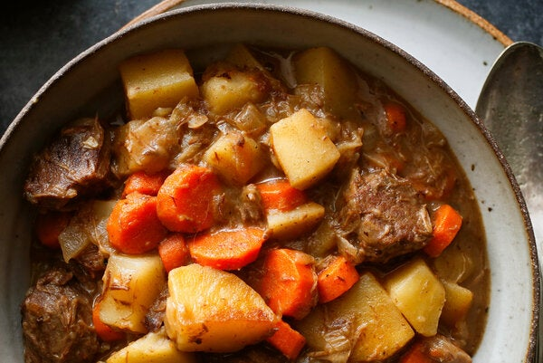

Beef Stew Recipe

Description
Beef stew is a classic. As the name suggests, it contains meat in a hearty tomato vegetable broth. It is often a Winter dish best served
with rice/bread next to a fireplace.
Ingredients
- Beef (gravy/chuck is the best)
- Beef stock
- Tomato paste
- Vegetables: any you like, but recommend carrots, potato, leek and celery
- Onion
- Garlic
- Cornflower
- Salt and pepper
- Red wine
- Worchester sauce
Steps
- Cook beef until just brown
- Take out beef and leave in a separate bowl
- Fry up onion and garlic
- Add celery and cook until slightly brown
- Add back beef
- Mix cornflower in
- Pour the stock in, along with 1 cup red wine and 2 tbsp tomato paste
- Add worchester sauce and salt and pepper
- Bring to a boil and simmer for 1 hour
- Add cut up vegetables and return to a simmer
- Simmer for 2 hours